A Week in São Tomé and Príncipe: December 2019

In December 2019, we spent an incredible week on the island of São Tomé and Príncipe, immersing ourselves in its rich culture, history, and natural beauty. Our adventure began in the vibrant capital city, where we explored its colonial architecture and local markets. We then visited several stunning beaches, soaking in the sun and relaxing by the turquoise waters.
We ventured into the island’s lush interior to explore historic roças, old plantation estates, learning about their role in the island's history. Highlights included the picturesque Roça Diogo Vaz and the remote beauty of Santa Catarina.
Our journey also took us to the striking Pico do Cão, a volcanic peak offering breathtaking views of the surrounding landscape. We explored the coastal town of Santana and the cultural hub of São João dos Angolares, where we enjoyed authentic local cuisine.
The trip culminated with a visit to the idyllic Ilhéu das Rolas, where we stood on the equator line and enjoyed the island’s tranquil beaches. This week in São Tomé and Príncipe was a perfect blend of history, culture, and natural beauty, making it a truly memorable experience.
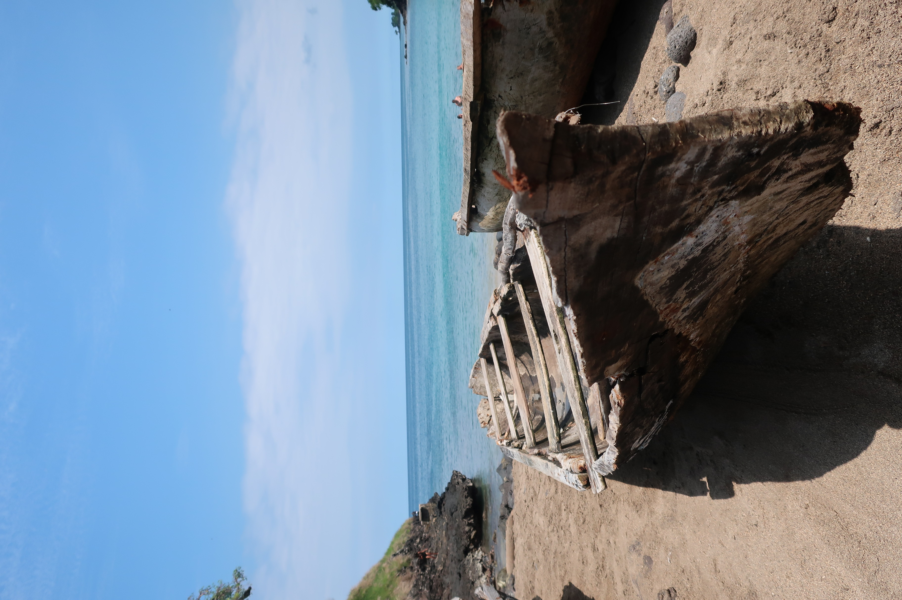
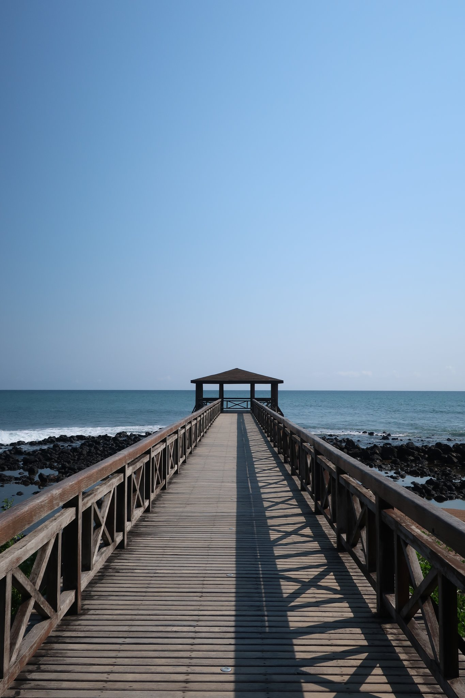
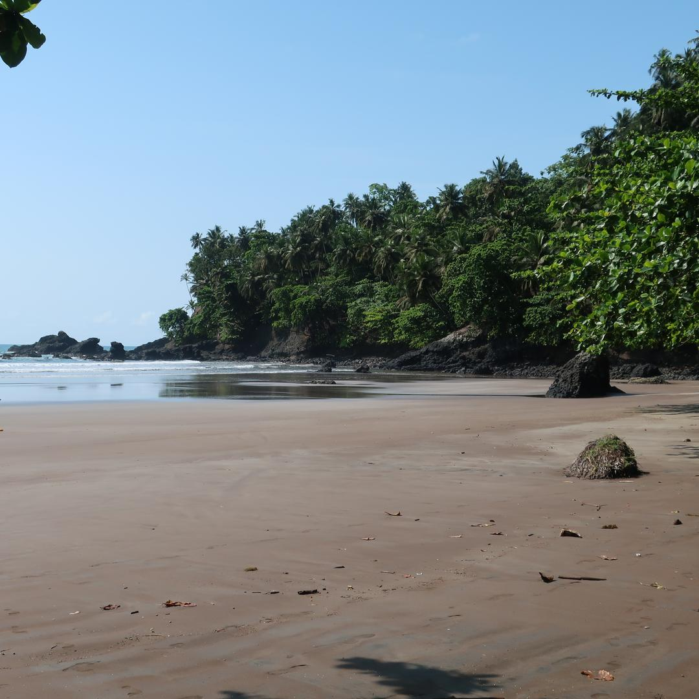
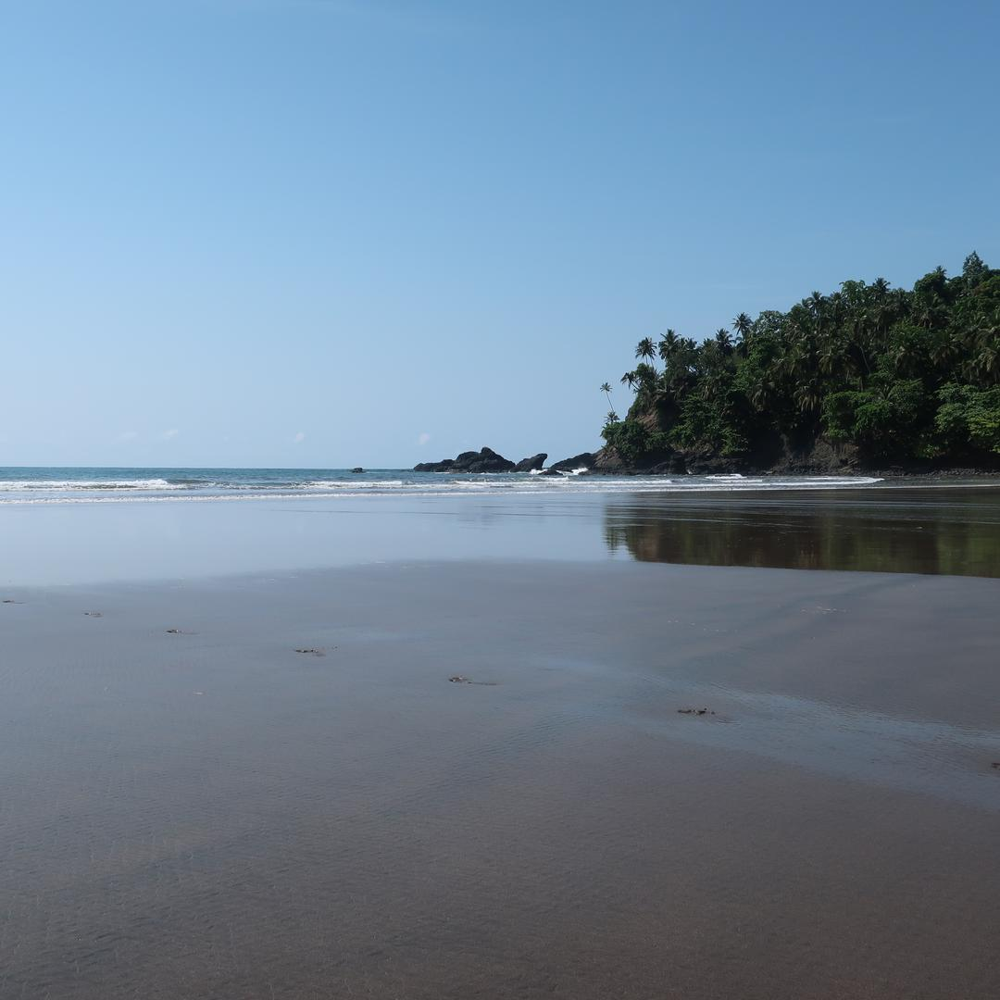
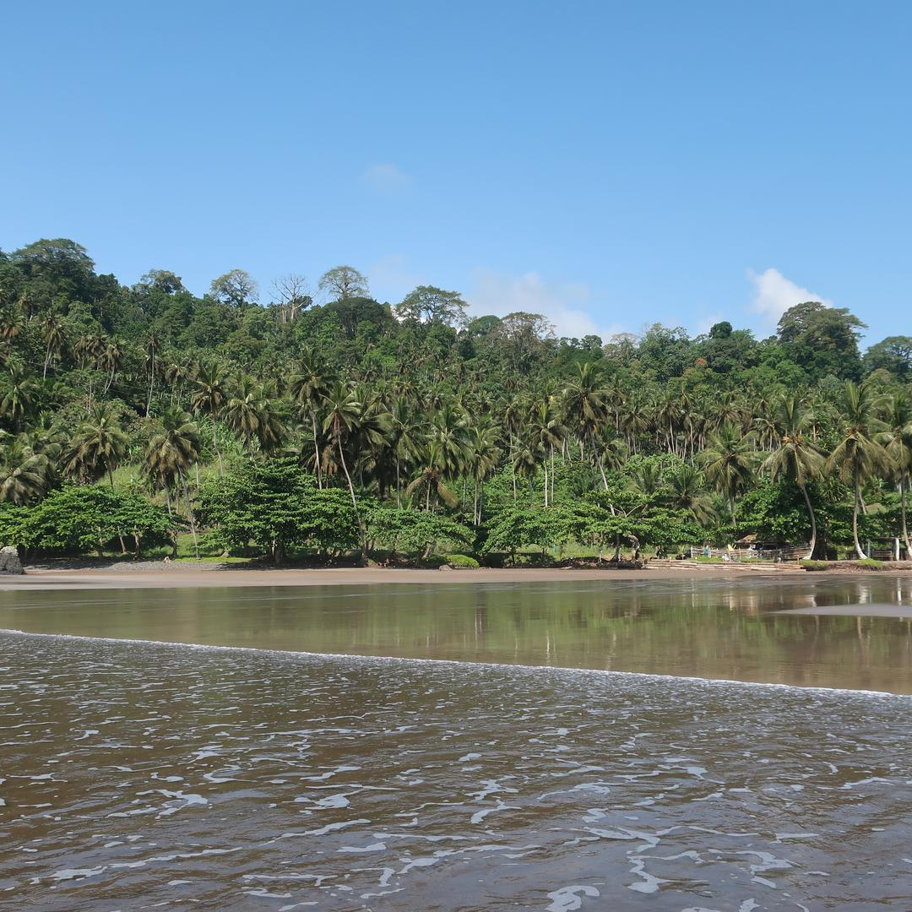
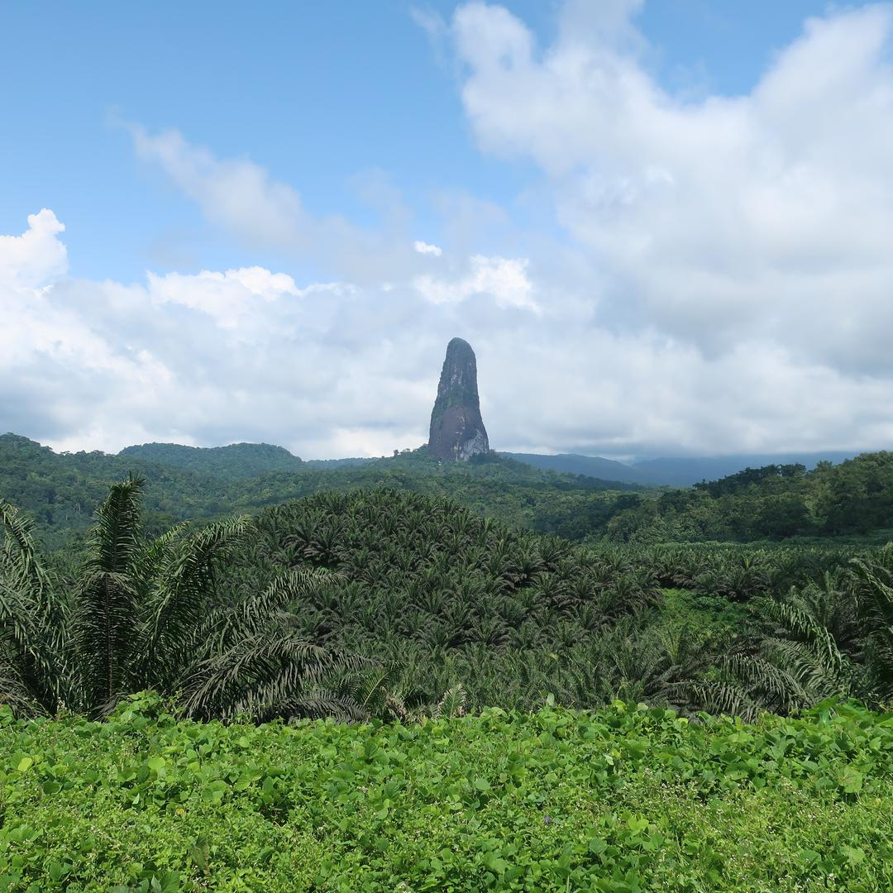
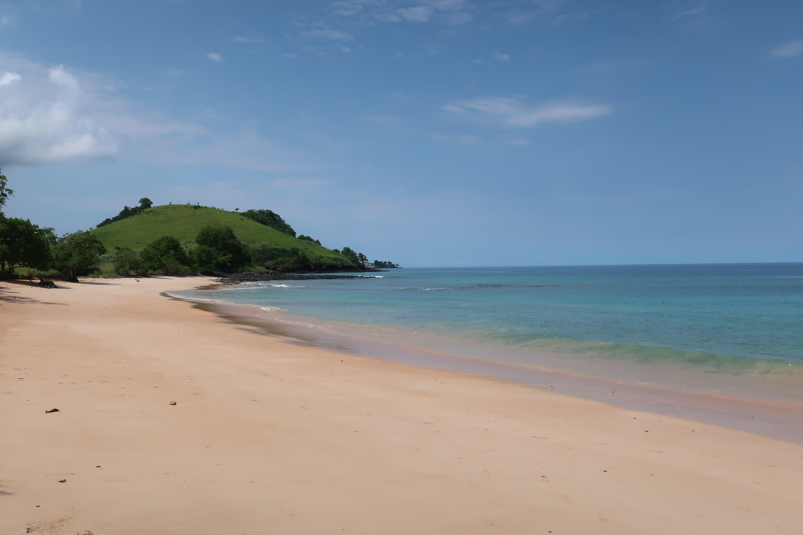
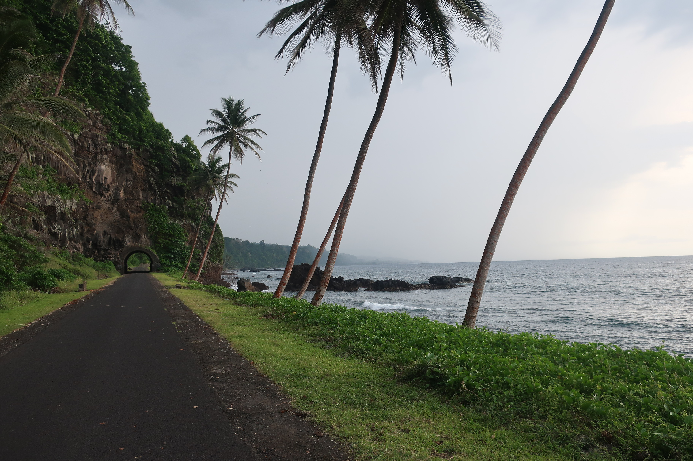
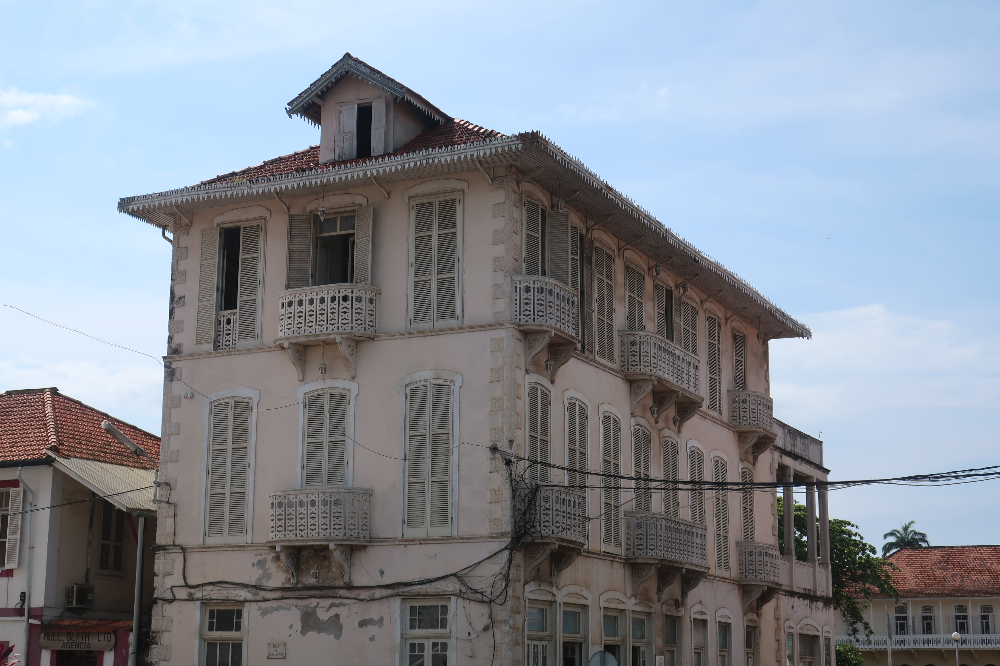
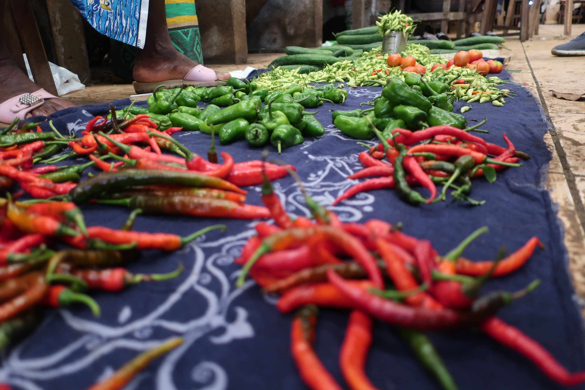
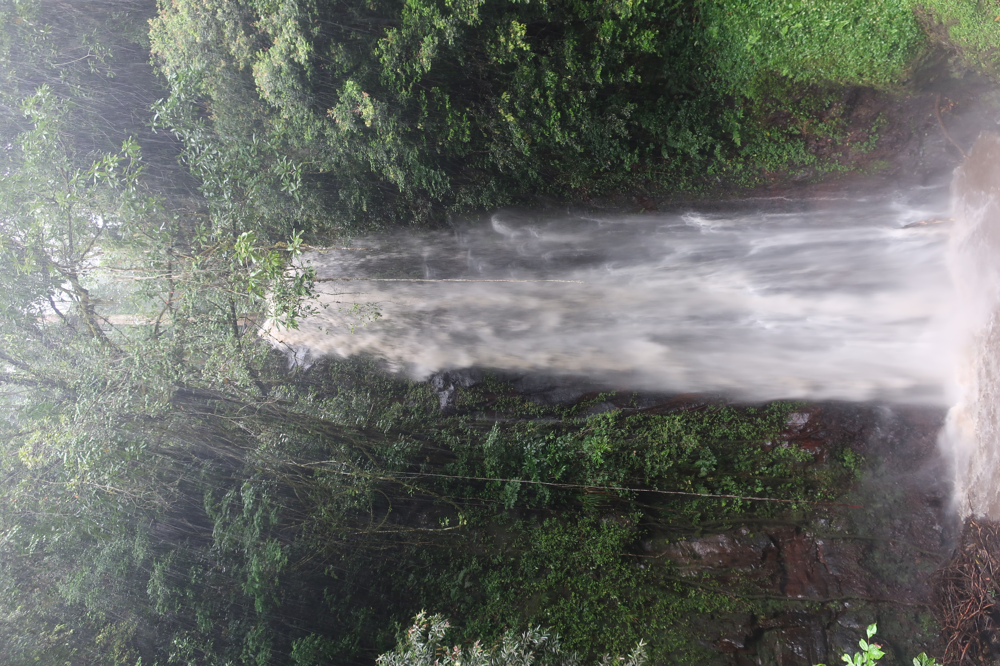
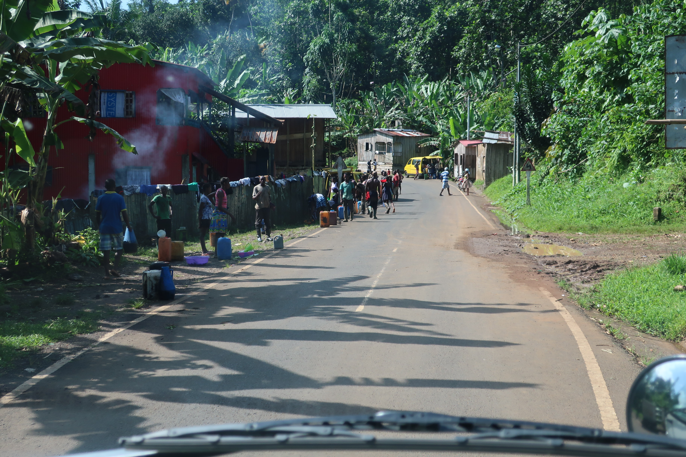
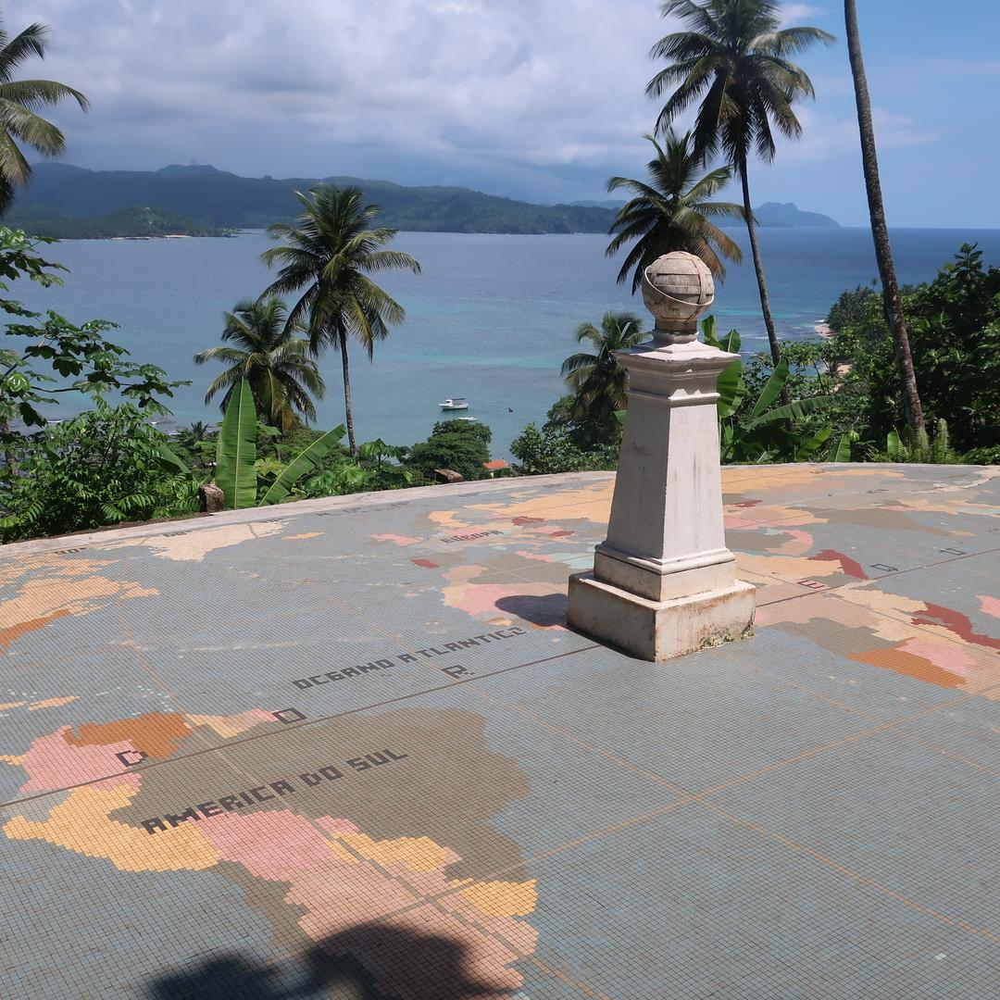
 Bordeaux
Bordeaux
 Tallin & Riga Christmas Markets
Tallin & Riga Christmas Markets
 Barcelona, Vic & Girona
Barcelona, Vic & Girona
 Skopje, North Macedonia
Skopje, North Macedonia